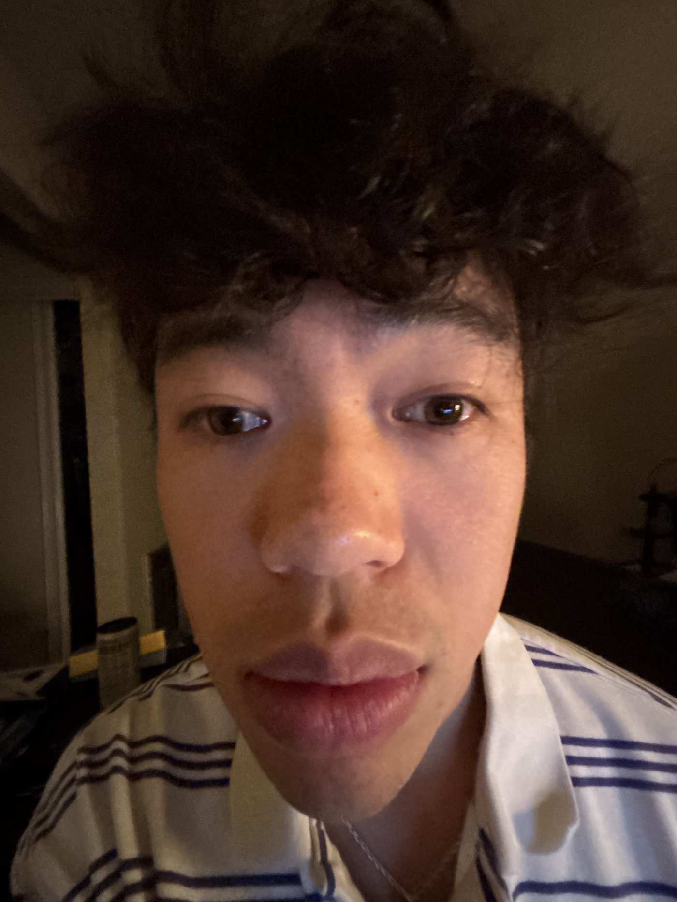
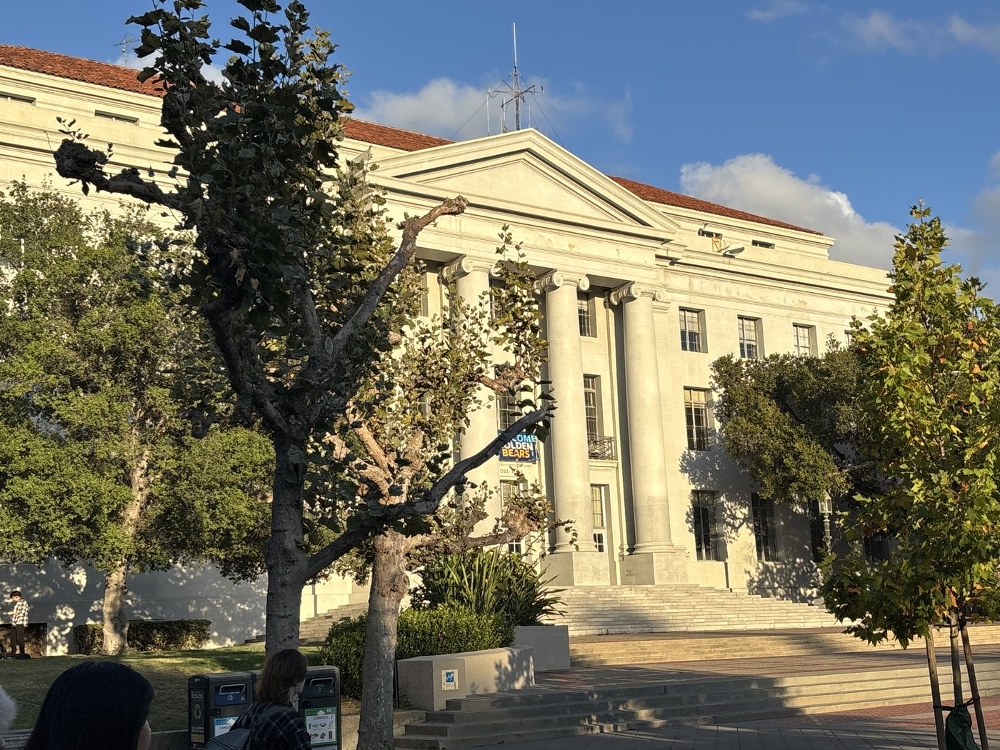
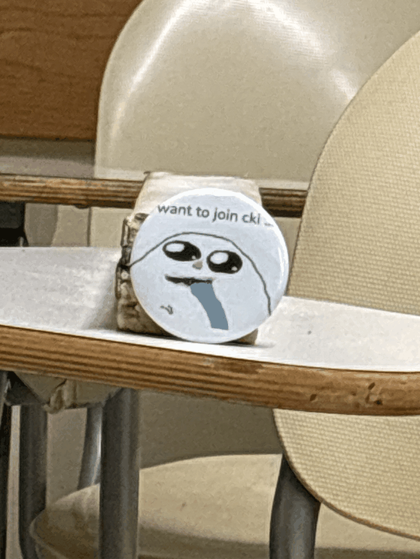

CS180 · Intro to Computer Vision and Computational Photography

The photo taken further away looks a lot better because the proportion of my features is more similar to what they are in real life. Things like my mouth, which is gigantic in the first photo, is smaller and more proportional to the rest of my face in the second.

The picture on the left looks compressed because zoomed out, there is less percentage difference in distance between adjacent parts of the building and the camera. A large portion of the distance between parts of the building and the camera is composed of the distance between the camera and the building as a whole. Close up without zoom, with the camera is closer to the whole building, the percentage difference between adjacent parts of the building and the camera is larger, causing the photo to be less flat and more dynamic.
